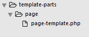

Obligatory Template Files
The image above shows us the required primary template files in Banana Wordpress Projects. Please, DO NOT add or remove primary template files unless it's really neccessary.
Other than keeping the templating minimal, we also will emphasize on using template parts using the get_template_part(); function, it will make templating more modular.
E.g
